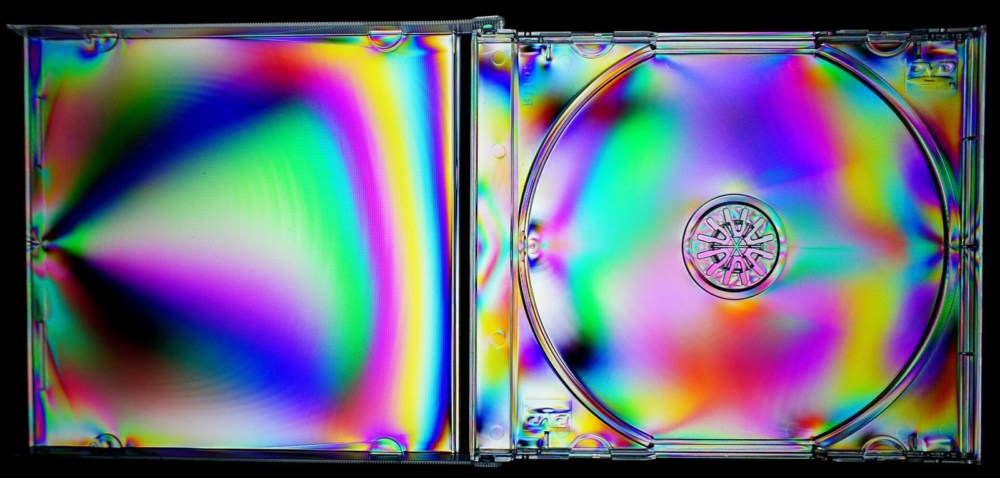
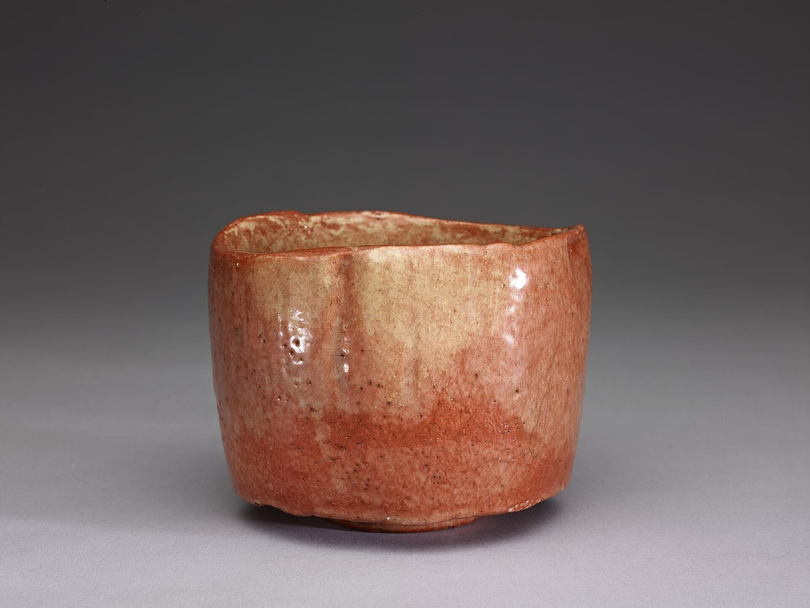

第21回
まっすぐな路地の線が、遠くの一点へ寄っていく。
Basile Morin（2019年、京都・祇園の路地）／CC BY-SA 4.0／Wikimedia Commons（横長に切り出した）
第20回で見つけた固有ベクトルを並べて座標軸にすると、行列は固有値を対角に並べただけの行列に書き換わる。これが対角化 $P^{-1}AP=D$ である。対称行列に限っては、固有ベクトルを直交にとれて $Q^{\mathsf T}AQ=\Lambda$ となり、そこから二次形式 $\boldsymbol x^{\mathsf T}A\boldsymbol x$ が平方の和に直り、正定値かどうかが固有値の符号で決まる。式変形を1行ずつ追う。
第1回から続く約束どおり、新しい記号は緑色の枠（記号）で「①読み方 ②日本語での意味 ③省略していない書き方 ④どこで出会うか」を書く。この回の中心の省略は「$P$ の列が $A$ の固有ベクトルで $P$ は逆行列をもつ、というときの $A$ の姿」を $P^{-1}AP=D$ の一行にしたことなので、1.2 の省略の段階で S0 から S3 まで1段ずつ並べる。以後この箱にリンクして使う。
この回は、第20回の固有値・固有ベクトルと、第19回の直交行列・グラム・シュミットを合わせて使う回である。使うたびにリンクを張るので、忘れていても元の説明に戻れる。式変形は1行に1操作だけ進め、理由を右（または下）に書く。すべての計算は数値で一度手を動かしてから文字の式に進む。
なお、対角化できない行列も含め任意の行列を分解する特異値分解は第22回、連立の微分方程式への応用は第31回、多変数の極値判定（ヘッセ行列）の本格的な扱いは第51回で行う。この回ではそれぞれ予告だけにする。第18回（行列式）は並行して作成中なので、そこへのリンクは、その回で付ける記号の名前に合わせてある。
最初に、この回で新しく説明する記号と、前の回で説明済みの記号を分けて並べる。右の列の「→」で説明のある場所へ飛べる。
| 記号 | 読み方 | ざっくりした意味 | 説明 |
|---|---|---|---|
| $\operatorname{diag}(d_1,\dots,d_n)$（対角行列） | ダイアグ | 対角成分だけが $d_1,\dots,d_n$ で、ほかは全部 $0$ の行列 | →1.2 |
| $P^{-1}AP=D$（対角化、対角化可能） | ピー・インバース・エー・ピー・イコール・ディー | 固有ベクトルを並べた $P$ で座標をとり替えると、$A$ が対角行列 $D$ になる | →1.2、→1.2 |
| $A\sim B$（相似） | エー・そうじ・ビー | $B=P^{-1}AP$ となる可逆な $P$ がある（同じ写像を別の座標で見たもの） | →1.6 |
| $A=A^{\mathsf T}$（対称行列） | たいしょうぎょうれつ | 対角線で折り返すと重なる行列（$A_{ij}=A_{ji}$） | →2.1 |
| $\bar z$（複素共役） | ゼット・バー | $a+bi$ の $i$ の符号を変えた $a-bi$ | →2.2 |
| $Q^{\mathsf T}AQ=\Lambda$（直交対角化）、$\Lambda$ | キュー・トランスポーズ・エー・キュー・イコール・ラムダ（大文字） | 直交行列で対角化すること。$\Lambda$ は固有値を並べた対角行列 | →2.3 |
| $A=\sum\lambda_i\boldsymbol q_i\boldsymbol q_i^{\mathsf T}$（スペクトル分解） | スペクトルぶんかい | $A$ を、固有ベクトルの方向への射影行列に固有値を掛けて足したもの | →2.5 |
| $q(\boldsymbol x)=\boldsymbol x^{\mathsf T}A\boldsymbol x$（二次形式） | にじけいしき | 変数の2次の項だけでできた式を、対称行列 $A$ で表したもの | →3.1 |
| $A\succ0$、$A\succeq0$（正定値、半正定値） | エー・ぱっつ・ゼロ（正定値） | $\boldsymbol 0$ でないどの $\boldsymbol x$ でも $\boldsymbol x^{\mathsf T}A\boldsymbol x$ が正（半正定値は $0$ 以上） | →3.3 |
| $\Delta_k$（主小行列式） | デルタ・ケー | 左上 $k\times k$ の部分の行列式 | →3.4 |
| 記号 | 意味 | 初出 |
|---|---|---|
| $=$、$:=$ | 等しい／左の名前を右の式で決める | 第1回 2.1、第1回 2.2 |
| $\in$、$\mathbb R$、$\forall$、$\exists$、$\Rightarrow$、$\Leftrightarrow$ | 要素である／実数全体／すべての／存在する／ならば／同値 | 第2回、第2回、第2回、第2回、第2回、第2回 |
| $\displaystyle\sum$（総和） | 足し合わせ | 第4回 |
| 太字 $\boldsymbol v$（ベクトル）、$\boldsymbol 0$、$A\in\mathbb R^{n\times n}$、$A_{ij}$、$I$ | 数の組／零ベクトル／$n$ 行 $n$ 列の行列／成分／単位行列 | 第5回、第5回、第5回、第5回、第5回 |
| $A^{\mathsf T}$（転置） | 行と列を入れ替えた行列 | 第5回 |
| 一次結合、一次独立、基底、$\dim$、座標、基底を並べた表 $P$ | 定数倍の和／冗長がない／座標軸の役目をする組／基底の本数／基底での数の組／基底を列に並べた行列 | 第15回、第15回、第15回、第15回、第15回、第15回 |
| $A\boldsymbol x$、線形写像、$AB$、$A^{-1}$、$A^k$ | 列の一次結合／写像／合成／逆の写像／繰り返し | 第16回、第16回、第16回、第16回、第16回 |
| $\operatorname{rank}A$、$\ker A$ | 主成分の数／$A\boldsymbol x=\boldsymbol 0$ の解全体 | 第17回、第17回 |
| $\det A$（行列式） | 符号つきの拡大率 | 第18回 |
| $\langle\boldsymbol u,\boldsymbol v\rangle$（内積）、$\|\boldsymbol v\|$、$\perp$（直交） | 2本から数を作る規則／長さ／内積が0 | 第19回、第19回、第19回 |
| 正規直交基底、直交行列 $Q$（$Q^{\mathsf T}Q=I$）、射影行列、グラム・シュミット | 直交で長さ1の基底／列が正規直交の行列／射影の行列／直交化の手順 | 第19回、第19回、第19回、第19回 |
| 固有値 $\lambda$、固有ベクトル、固有空間 $E_\lambda$、$\operatorname{tr}A$、特性多項式 $p_A$、重複度、$i$ | 向きを変えない方向と倍率／その直線全体／対角和／固有値を決める式／根の重なりと独立な本数／虚数単位 | 第20回、第20回、第20回、第20回、第20回、第20回 |
第20回 5.1 で、$A=\begin{pmatrix}2&1\\1&2\end{pmatrix}$ の固有ベクトル $\boldsymbol v_1=(1,1)^{\mathsf T}$（固有値 $3$）と $\boldsymbol v_2=(1,-1)^{\mathsf T}$（固有値 $1$）を使うと、$A^k\boldsymbol x$ が簡単に求まることを見た。そのとき、$\boldsymbol x$ を $\boldsymbol v_1,\boldsymbol v_2$ の一次結合に直すという手間を毎回かけていた。この回では、その手間を行列の積の形にまとめて、「$A$ そのものが簡単な行列に書き換わる」と言えるようにする。
考え方は、座標軸をとり替えることである。普通の座標軸（$x$ 軸、$y$ 軸）は私たちが勝手に選んだ軸にすぎない。$A$ にとって都合のよい軸は、$A$ が数倍にしか働かない方向、つまり固有ベクトルの方向である。基底を固有ベクトルに選べば、その基底に関する座標では、$A$ は「第1座標を $3$ 倍、第2座標を $1$ 倍」とするだけの写像に見える。
図1.1 を見る。$\boldsymbol v_1,\boldsymbol v_2$ を2辺とする平行四辺形が、$A$ を掛けると、$\boldsymbol v_1$ の方向に $3$ 倍に伸び、$\boldsymbol v_2$ の方向には変わらない。ずれも回転も起きない。
まず、右辺に現れる「対角成分だけの行列」に名前をつける。高校・1年で習っているはずだが、記号を仮定せず書いておく（知っている人は飛ばしてよい）。
①読み方：「ダイアグ・ディー・イチ、ディー・ニ、…、ディー・エヌ」。日本語で「対角行列（たいかくぎょうれつ）」。
②日本語での意味：左上から右下への斜めの線（対角線）の上にだけ数 $d_1,\dots,d_n$ が並び、それ以外の成分はすべて $0$ の正方行列。
③省略していない書き方：$n\times n$ 行列 $D$ で、$D_{ij}=d_i$（$i=j$ のとき）、$D_{ij}=0$（$i\neq j$ のとき）となるもの。たとえば $n=3$ なら $$ \operatorname{diag}(d_1,d_2,d_3)=\begin{pmatrix}d_1&0&0\\0&d_2&0\\0&0&d_3\end{pmatrix}. $$ （成分の記号 $D_{ij}$ は第5回。）
④どこで出会うか：対角化（この回）、特異値分解（第22回）、連立微分方程式の分離（第31回）、慣性モーメントの主軸（機械力学）。
対角行列 $D=\operatorname{diag}(d_1,\dots,d_n)$ の大事な性質は2つ。(D1) $D\boldsymbol y=(d_1y_1,\dots,d_ny_n)^{\mathsf T}$（各成分を別々に $d_i$ 倍するだけ）。(D2) $D^k=\operatorname{diag}(d_1^k,\dots,d_n^k)$（各成分を別々に $k$ 乗するだけ）。(D2) の理由：$D$ を2回掛けると、$(DD)\boldsymbol y=D(D\boldsymbol y)$ の第 $i$ 成分は $d_i(d_iy_i)=d_i^2y_i$。これを $k$ 回繰り返せば $d_i^k$。
最小の具体例：1.1 の $A=\begin{pmatrix}2&1\\1&2\end{pmatrix}$ と、固有ベクトル $\boldsymbol v_1=(1,1)^{\mathsf T}$（固有値 $\lambda_1=3$）、$\boldsymbol v_2=(1,-1)^{\mathsf T}$（固有値 $\lambda_2=1$）。固有ベクトルを列として左から順に並べた行列を $P$、固有値を同じ順に並べた対角行列を $D$ とする： $$ P=\begin{pmatrix}\boldsymbol v_1&\boldsymbol v_2\end{pmatrix}=\begin{pmatrix}1&1\\1&-1\end{pmatrix},\qquad D=\operatorname{diag}(\lambda_1,\lambda_2)=\begin{pmatrix}3&0\\0&1\end{pmatrix}. $$ （$P$ の作り方は第15回の基底を並べた表と同じ。）このとき $AP$ と $PD$ を別々に計算する。
① $AP$ の第1列は $A\boldsymbol v_1=\begin{pmatrix}2\cdot1+1\cdot1\\1\cdot1+2\cdot1\end{pmatrix}=\begin{pmatrix}3\\3\end{pmatrix}$、第2列は $A\boldsymbol v_2=\begin{pmatrix}2\cdot1+1\cdot(-1)\\1\cdot1+2\cdot(-1)\end{pmatrix}=\begin{pmatrix}1\\-1\end{pmatrix}$。よって $AP=\begin{pmatrix}3&1\\3&-1\end{pmatrix}$。
② $PD$ の第1列は $P\begin{pmatrix}3\\0\end{pmatrix}=3\boldsymbol v_1=\begin{pmatrix}3\\3\end{pmatrix}$、第2列は $P\begin{pmatrix}0\\1\end{pmatrix}=1\cdot\boldsymbol v_2=\begin{pmatrix}1\\-1\end{pmatrix}$。よって $PD=\begin{pmatrix}3&1\\3&-1\end{pmatrix}$。
③ 両者は等しい：$AP=PD$。
図1.2 に、この「列ごとに見る」考え方を描く。
一般の導出。$A\in\mathbb R^{n\times n}$ が、固有対 $(\lambda_1,\boldsymbol v_1),\dots,(\lambda_n,\boldsymbol v_n)$ をもつとする。$P:=(\boldsymbol v_1\ \cdots\ \boldsymbol v_n)$、$D:=\operatorname{diag}(\lambda_1,\dots,\lambda_n)$ とおく。
① $AP=(A\boldsymbol v_1\ \cdots\ A\boldsymbol v_n)$。
② $=(\lambda_1\boldsymbol v_1\ \cdots\ \lambda_n\boldsymbol v_n)$。
③ $PD$ の第 $j$ 列は $P(\lambda_j\boldsymbol e_j)=\lambda_jP\boldsymbol e_j=\lambda_j\boldsymbol v_j$。
④ ② と ③ の列がすべて一致するから、$AP=PD$。
⑤ もし $P$ が逆行列をもつなら、④ の両辺に左から $P^{-1}$ を掛けて $P^{-1}AP=P^{-1}PD=ID=D$。
$P$ が逆行列をもつかどうかは、$P$ の列＝固有ベクトルが一次独立かどうかで決まる（第17回の定理6.1：$n\times n$ 行列が逆行列をもつ ⇔ 列が一次独立）。
①読み方：$P^{-1}AP=D$ は「ピー・インバース・エー・ピー・イコール・ディー」。日本語で「対角化（たいかくか）」。そうできる行列を「対角化可能（たいかくか・かのう）」という。
②日本語での意味：座標軸を適当にとり替えると、行列 $A$ が対角行列 $D$ に書き換わること。つまり $A$ の働きが「軸ごとの伸び縮み」だけになること。
③省略していない書き方：$A\in\mathbb R^{n\times n}$ が対角化可能であるとは、次の2つを満たす行列 $P\in\mathbb R^{n\times n}$ と対角行列 $D\in\mathbb R^{n\times n}$ が存在することである。(i) $P$ は逆行列 $P^{-1}$ をもつ。(ii) $P^{-1}AP=D$。このとき $P$ の第 $j$ 列は $A$ の固有ベクトル、$D$ の第 $j$ 対角成分はその固有値になっている（定理1.1）。
④どこで出会うか：行列の累乗 $A^k$（1.5）、対称行列の主軸変換（2章・3章）、連立微分方程式 $\dot{\boldsymbol x}=A\boldsymbol x$ の解（第31回）、振動の固有モード（機械力学）。
| 段 | 書き方 | この段で省いたもの | 省いても誤解が起きない理由 |
|---|---|---|---|
| S0 | 「$A$ の固有ベクトル $\boldsymbol v_1,\dots,\boldsymbol v_n$ が一次独立で、それを左から順に列として並べた行列 $P$ をつくり、対応する固有値を同じ順に対角に並べた行列 $D$ をつくると、$P$ は逆行列をもち、その逆行列を左から、$P$ を右から $A$ に掛けた行列が $D$ に等しい」 | （なし） | — |
| S1 | $P=(\boldsymbol v_1\ \cdots\ \boldsymbol v_n)$（$\boldsymbol v_j$ は一次独立な固有ベクトル）、$D=\operatorname{diag}(\lambda_1,\dots,\lambda_n)$、$P^{-1}AP=D$ | 「並べた」「掛けた」という言葉 | 式の中身が言葉と1対1に対応する。$P$ の列の並べ順と $D$ の対角成分の並べ順が同じであることは、添字 $j$ が同じであることで分かる |
| S2 | $P^{-1}AP=D$（$P$ は可逆、$D$ は対角） | $P$ の列が固有ベクトルであること、$D$ の成分が固有値であること | $AP=PD$ を列ごとに読めば（上の導出 ①〜④）自動的に分かる。ただし「$P$ が可逆」は省けない（省くと $P=O$ でも $AO=OD$ が成り立ってしまう） |
| S3 | $A$ は対角化可能 | 式そのものを名前にまとめた | 名前から S2 に戻れる。使うときは「$P$ をどう作るか」（固有ベクトルを並べる）を覚えておく |
落とし穴：S2 の「$P$ は可逆」を落とすと、定義が空っぽになる。固有ベクトルの数が足りない行列（1.4）は、可逆な $P$ が作れないので S2 を満たさない。
確かめ（数値）：$P=\begin{pmatrix}1&1\\1&-1\end{pmatrix}$ の逆行列は、2×2 の公式（第18回：$\det P=1\cdot(-1)-1\cdot1=-2\neq0$ なので存在する）で $P^{-1}=\dfrac{1}{-2}\begin{pmatrix}-1&-1\\-1&1\end{pmatrix}=\dfrac12\begin{pmatrix}1&1\\1&-1\end{pmatrix}$。$PP^{-1}=\dfrac12\begin{pmatrix}1+1&1-1\\1-1&1+1\end{pmatrix}=I$ ✓。
① $P^{-1}(AP)=\dfrac12\begin{pmatrix}1&1\\1&-1\end{pmatrix}\begin{pmatrix}3&1\\3&-1\end{pmatrix}$。
② $=\dfrac12\begin{pmatrix}1\cdot3+1\cdot3&1\cdot1+1\cdot(-1)\\1\cdot3+(-1)\cdot3&1\cdot1+(-1)(-1)\end{pmatrix}=\dfrac12\begin{pmatrix}6&0\\0&2\end{pmatrix}=\begin{pmatrix}3&0\\0&1\end{pmatrix}=D$ ✓。
$P^{-1}AP=D$ の両辺に左から $P$、右から $P^{-1}$ を掛けると $$ A=PDP^{-1}. $$ （理由：$P(P^{-1}AP)P^{-1}=(PP^{-1})A(PP^{-1})=IAI=A$、右辺は $PDP^{-1}$。）これを積は合成（右から順に働く）と読む。$A\boldsymbol x=P(D(P^{-1}\boldsymbol x))$ は、次の3段階である。
図1.4 に、この3段階（座標をとり替える → 伸び縮み → 座標を戻す）を四角形で描く。左上から右上へ直接 $A$ で進む道と、下をまわって $P^{-1}$、$D$、$P$ で進む道が、同じ場所に着く。
数値で一度：$\boldsymbol x=(3,1)^{\mathsf T}$。(a) $\boldsymbol y=P^{-1}\boldsymbol x=\dfrac12\begin{pmatrix}1\cdot3+1\cdot1\\1\cdot3-1\cdot1\end{pmatrix}=\begin{pmatrix}2\\1\end{pmatrix}$（第20回 5.1 の $c_1=2,c_2=1$ と一致）。(b) $D\boldsymbol y=(3\cdot2,\ 1\cdot1)^{\mathsf T}=(6,1)^{\mathsf T}$。(c) $P\begin{pmatrix}6\\1\end{pmatrix}=\begin{pmatrix}6+1\\6-1\end{pmatrix}=\begin{pmatrix}7\\5\end{pmatrix}$。直接 $A\boldsymbol x=(2\cdot3+1,\ 3+2\cdot1)^{\mathsf T}=(7,5)^{\mathsf T}$ ✓。
1.2 の導出は、矢印がすべて両向きである。したがって次が言える。
$A\in\mathbb R^{n\times n}$ について、次の2つは同じことである。
(b) ⇒ (a)：$n$ 本の一次独立な固有ベクトル $\boldsymbol v_1,\dots,\boldsymbol v_n$（固有値 $\lambda_1,\dots,\lambda_n$）をとり、$P:=(\boldsymbol v_1\ \cdots\ \boldsymbol v_n)$ とする。列が一次独立な $n\times n$ 行列は逆行列をもつ（第17回の定理6.1）。1.2 の導出 ①〜⑤ より $P^{-1}AP=\operatorname{diag}(\lambda_1,\dots,\lambda_n)$。
(a) ⇒ (b)：$P^{-1}AP=D=\operatorname{diag}(d_1,\dots,d_n)$ とする。両辺に左から $P$ を掛けて $AP=PD$。両辺の第 $j$ 列を比べると（1.2 の ①〜④ と同じ計算）、$P$ の第 $j$ 列を $\boldsymbol p_j$ として $A\boldsymbol p_j=d_j\boldsymbol p_j$。$P$ は可逆なので列は一次独立（第17回の定理6.1）、とくに $\boldsymbol p_j\neq\boldsymbol 0$。よって $\boldsymbol p_j$ は固有値 $d_j$ の固有ベクトルで、$\boldsymbol p_1,\dots,\boldsymbol p_n$ が求める基底。□
この定理から、次の2つの使える結論が出る。
$n\times n$ 行列が、互いに異なる実数の固有値を $n$ 個もてば、対角化可能。
各固有値の固有ベクトルを1本ずつとると、第20回の定理4.3（異なる固有値の固有ベクトルは一次独立）により、$n$ 本は一次独立。定理1.1 (b) が成り立つ。□
$\lambda_1,\dots,\lambda_m$ を $A$ の異なる固有値、$g_k$、$a_k$ をそれぞれの幾何的・代数的重複度とする。定理1.1 の $n$ 本の一次独立な固有ベクトルは、どれかの固有空間 $E_{\lambda_k}$ に入っている。$E_{\lambda_k}$ の中の一次独立なベクトルは $\dim E_{\lambda_k}=g_k$ 本までしかとれないから、$n\le g_1+\cdots+g_m$。一方、第20回の定理3.1より $g_k\le a_k$、また特性多項式は $n$ 次式なので根の重なりの合計は $a_1+\cdots+a_m\le n$。まとめると $n\le\sum g_k\le\sum a_k\le n$。すべて等号だから、各 $k$ で $g_k=a_k$。□
反例：第20回 3.1 のせん断 $S=\begin{pmatrix}1&1\\0&1\end{pmatrix}$ は、固有値 $1$ の代数的重複度が $2$、幾何的重複度が $1$。系1.3 より対角化できない。ほんとうに $P^{-1}SP=D$ となる可逆な $P$ がないことは、次のようにも確かめられる：もしあれば $D=\operatorname{diag}(d_1,d_2)$ の対角成分は $S$ の固有値なので $d_1=d_2=1$、$D=I$。すると $P^{-1}SP=I$ の両辺に左から $P$ を掛けて右から $P^{-1}$ を掛けると $S=PIP^{-1}=I$ となり、$S\neq I$ に矛盾する。
図1.5 に、対角化できるかどうかを調べる流れを描く。
対角化の最大の利点は、累乗が一気に計算できることである。$A=PDP^{-1}$ を $A^k$ に入れて、1行ずつ確かめる。
① $A^2=(PDP^{-1})(PDP^{-1})$。
② $=PD(P^{-1}P)DP^{-1}$。
③ $=PDIDP^{-1}=PD^2P^{-1}$。
④ 同じことを繰り返すと、$A^k=PD^kP^{-1}$。
⑤ そして $D^k=\operatorname{diag}(\lambda_1^k,\dots,\lambda_n^k)$。
数値：1.2 の $A,P,D,P^{-1}$ で、
⑥ $A^k=\begin{pmatrix}1&1\\1&-1\end{pmatrix}\begin{pmatrix}3^k&0\\0&1\end{pmatrix}\dfrac12\begin{pmatrix}1&1\\1&-1\end{pmatrix}$。
⑦ 先に左2つを掛ける：$\begin{pmatrix}1&1\\1&-1\end{pmatrix}\begin{pmatrix}3^k&0\\0&1\end{pmatrix}=\begin{pmatrix}3^k&1\\3^k&-1\end{pmatrix}$。
⑧ 次に右と掛ける：$\dfrac12\begin{pmatrix}3^k&1\\3^k&-1\end{pmatrix}\begin{pmatrix}1&1\\1&-1\end{pmatrix}=\dfrac12\begin{pmatrix}3^k+1&3^k-1\\3^k-1&3^k+1\end{pmatrix}$。
⑨ 確かめ：$k=1$：$\dfrac12\begin{pmatrix}4&2\\2&4\end{pmatrix}=\begin{pmatrix}2&1\\1&2\end{pmatrix}=A$ ✓。$k=2$：$\dfrac12\begin{pmatrix}10&8\\8&10\end{pmatrix}=\begin{pmatrix}5&4\\4&5\end{pmatrix}$、直接 $A^2=\begin{pmatrix}2\cdot2+1\cdot1&2\cdot1+1\cdot2\\1\cdot2+2\cdot1&1\cdot1+2\cdot2\end{pmatrix}=\begin{pmatrix}5&4\\4&5\end{pmatrix}$ ✓。$k=0$：$\dfrac12\begin{pmatrix}2&0\\0&2\end{pmatrix}=I$ ✓。
ベクトル $\boldsymbol x=(3,1)^{\mathsf T}$ に掛けると、第1成分は $\dfrac12\bigl(3(3^k+1)+(3^k-1)\bigr)=2\cdot3^k+1$、第2成分は $\dfrac12\bigl(3(3^k-1)+(3^k+1)\bigr)=2\cdot3^k-1$。すなわち $A^k\boldsymbol x=(2\cdot3^k+1,\ 2\cdot3^k-1)^{\mathsf T}$ で、第20回 5.1 の答えと一致する。図1.6 に、$k$ を増やしたときの点の動きを描く。
なお $A^{-1}$ も、すべての $\lambda_j\neq0$ なら $A^{-1}=PD^{-1}P^{-1}$、$D^{-1}=\operatorname{diag}(\lambda_1^{-1},\dots,\lambda_n^{-1})$（$(PDP^{-1})(PD^{-1}P^{-1})=PDD^{-1}P^{-1}=PP^{-1}=I$）。多項式 $f(A)=c_0I+c_1A+\cdots+c_mA^m$ も $f(A)=P\operatorname{diag}(f(\lambda_1),\dots,f(\lambda_n))P^{-1}$ になる（各項に ④ を使い、$P$ と $P^{-1}$ をくくり出す）。
$P^{-1}AP$ という形は、対角化に限らず現れる。この形に名前をつける。
①読み方：$A\sim B$ は「エー・そうじ・ビー」（「$A$ と $B$ は相似である」）。英語で similar。
②日本語での意味：$B$ は、$A$ と同じ線形写像を、別の基底（座標）で表した行列になっている。
③省略していない書き方：$A,B\in\mathbb R^{n\times n}$ について、「$A\sim B$」とは、$B=P^{-1}AP$ を満たす逆行列をもつ $P\in\mathbb R^{n\times n}$ が存在すること。（$P$ を使って $A=PBP^{-1}$ と書き換えられるので、$B\sim A$ でもある。）
④どこで出会うか：対角化（$A\sim D$）、ジョルダン標準形（上級）、座標変換（機械力学、ロボット工学）。
相似な行列は、同じ写像の別の姿なので、写像の本質に関わる量は変わらない。
$B=P^{-1}AP$ のとき、(1) $\det B=\det A$。(2) 特性多項式が等しい：$p_B(\lambda)=p_A(\lambda)$（したがって固有値、代数的重複度も等しい）。(3) $\operatorname{tr}B=\operatorname{tr}A$。
(1) ① $\det B=\det(P^{-1}AP)=\det(P^{-1})\det(A)\det(P)$。 ② 数の積は順序を入れ替えられるので $=\det(P^{-1})\det(P)\det(A)$。 ③ $\det(P^{-1})\det(P)=\det(P^{-1}P)=\det I=1$。 ④ よって $\det B=\det A$。
(2) ① $\lambda I-B=\lambda I-P^{-1}AP=P^{-1}(\lambda I)P-P^{-1}AP$。 ② $=P^{-1}(\lambda I-A)P$。 ③ (1) と同じ計算で $\det(\lambda I-B)=\det(\lambda I-A)$。
(3) (2) より、$A$ と $B$ の固有値（重複の数だけ数える）は等しい。固有値の和がトレースに等しい（第20回の定理4.1）ので、$\operatorname{tr}B=\operatorname{tr}A$。□
これは、固有値が「座標のとり方によらない、写像そのものの量」であることを示している。逆に、$A\sim B$ でも $A\neq B$ の例は多い（$P$ を替えれば別の $B$ になる）。
PHOTO 1｜現実

透明な樹脂の中に残った力の向きが、色の縞になって浮かぶ。
Mk2010（2012年、偏光で見たディスクケースの応力）／CC BY-SA 3.0／Wikimedia Commons（縮小した）
1章の $P^{-1}AP=D$ では、$P^{-1}$ を求める必要があった。2×2 なら公式があるが、$n$ が大きいと連立方程式を解くのと同じ手間がかかり、数値計算では誤差も入り込む。もし $P$ の列が正規直交基底なら、$P$ は直交行列で、逆行列は転置 $P^{-1}=P^{\mathsf T}$ で済む（第19回 4.3）。さらに、直交行列は長さも角も変えないので、座標をとり替えても図形が歪まない。
そこで問う。固有ベクトルを直交にそろえられる行列はどんなものか。1.1 の $A=\begin{pmatrix}2&1\\1&2\end{pmatrix}$ では、$\boldsymbol v_1=(1,1)^{\mathsf T}$ と $\boldsymbol v_2=(1,-1)^{\mathsf T}$ の内積が $1\cdot1+1\cdot(-1)=0$ で、直交していた。一方、第20回の例題などに出た $C=\begin{pmatrix}4&1\\2&3\end{pmatrix}$ の固有ベクトル $(1,1)^{\mathsf T}$（固有値 $5$）と $(1,-2)^{\mathsf T}$（固有値 $2$）の内積は $1\cdot1+1\cdot(-2)=-1\neq0$ で、直交しない。違いは、$A$ が対角線について対称（$A_{12}=A_{21}=1$）で、$C$ はそうでない（$C_{12}=1\neq2=C_{21}$）ことにある。図2.1 を見る。
①読み方：「エー・イコール・エー・トランスポーズ」。日本語で「対称行列（たいしょうぎょうれつ）」。
②日本語での意味：左上から右下への対角線について折り返すと重なる正方行列。第 $i$ 行第 $j$ 列の成分と、第 $j$ 行第 $i$ 列の成分が等しい。
③省略していない書き方：$A\in\mathbb R^{n\times n}$ が対称であるとは、$A^{\mathsf T}=A$（転置が自分自身）、すなわちすべての $i,j\in\{1,\dots,n\}$ について $A_{ji}=A_{ij}$ が成り立つこと。たとえば $\begin{pmatrix}2&1\\1&2\end{pmatrix}$ は対称、$\begin{pmatrix}4&1\\2&3\end{pmatrix}$ は対称でない。
④どこで出会うか：二次形式（3章）、分散共分散行列（統計）、ヘッセ行列（2階偏微分を並べた行列、第11回で名前が出て、第51回で本格的に使う）、慣性テンソル・剛性行列（機械力学）、$B^{\mathsf T}B$ の形の行列すべて。
対称行列を扱う道具として、次の等式を先に証明しておく。
任意の $A\in\mathbb R^{n\times n}$ と $\boldsymbol x,\boldsymbol y\in\mathbb R^n$ について、$\langle A\boldsymbol x,\boldsymbol y\rangle=\langle\boldsymbol x,A^{\mathsf T}\boldsymbol y\rangle$。とくに $A$ が対称なら $\langle A\boldsymbol x,\boldsymbol y\rangle=\langle\boldsymbol x,A\boldsymbol y\rangle$。
① $\langle A\boldsymbol x,\boldsymbol y\rangle=(A\boldsymbol x)^{\mathsf T}\boldsymbol y$。
② $=\boldsymbol x^{\mathsf T}A^{\mathsf T}\boldsymbol y$。
③ $=\boldsymbol x^{\mathsf T}(A^{\mathsf T}\boldsymbol y)=\langle\boldsymbol x,A^{\mathsf T}\boldsymbol y\rangle$。□
$A$ が実対称行列で、$\lambda\neq\mu$ がその固有値、$\boldsymbol v$ が $\lambda$ の、$\boldsymbol w$ が $\mu$ の固有ベクトルなら、$\boldsymbol v\perp\boldsymbol w$（$\langle\boldsymbol v,\boldsymbol w\rangle=0$）。
① $\lambda\langle\boldsymbol v,\boldsymbol w\rangle=\langle\lambda\boldsymbol v,\boldsymbol w\rangle=\langle A\boldsymbol v,\boldsymbol w\rangle$。
② $\langle A\boldsymbol v,\boldsymbol w\rangle=\langle\boldsymbol v,A\boldsymbol w\rangle$。
③ $\langle\boldsymbol v,A\boldsymbol w\rangle=\langle\boldsymbol v,\mu\boldsymbol w\rangle=\mu\langle\boldsymbol v,\boldsymbol w\rangle$。
④ ①〜③ をつなぐと $\lambda\langle\boldsymbol v,\boldsymbol w\rangle=\mu\langle\boldsymbol v,\boldsymbol w\rangle$、すなわち $(\lambda-\mu)\langle\boldsymbol v,\boldsymbol w\rangle=0$。
⑤ $\lambda-\mu\neq0$ だから $\langle\boldsymbol v,\boldsymbol w\rangle=0$。□
数値で確かめ：$A=\begin{pmatrix}2&1\\1&2\end{pmatrix}$、$\lambda=3,\boldsymbol v=(1,1)^{\mathsf T}$、$\mu=1,\boldsymbol w=(1,-1)^{\mathsf T}$。$\langle A\boldsymbol v,\boldsymbol w\rangle=\langle(3,3),(1,-1)\rangle=3-3=0$、$\langle\boldsymbol v,A\boldsymbol w\rangle=\langle(1,1),(1,-1)\rangle=1-1=0$ で、補題2.1 の両辺が一致している。
次に、固有値が実数であることを示す。そのために、複素数を成分にもつベクトルが必要になるので、最小限の記号を用意する。複素数そのものは第34回で詳しく扱うが、ここで必要な部分だけ書く。
①読み方：「ゼット・バー」。日本語で「複素共役（ふくそきょうやく）」。
②日本語での意味：複素数 $z=a+bi$ の虚部の符号だけを逆にした数。
③省略していない書き方：実数 $a,b$ と虚数単位 $i$（$i^2=-1$）について、$z=a+bi$ のとき $\bar z:=a-bi$。次の2つが成り立つ。(C1) $z\bar z=(a+bi)(a-bi)=a^2-abi+abi-b^2i^2=a^2+b^2\ \ge0$（$z\neq0$ なら $\gt0$）。(C2) $z$ が実数（$b=0$）であることと $\bar z=z$ は同じ。ベクトル $\boldsymbol v=(v_1,\dots,v_n)^{\mathsf T}$ に対しては、成分ごとに共役をとったものを $\bar{\boldsymbol v}$ と書く。実行列 $A$ では $\overline{A\boldsymbol v}=A\bar{\boldsymbol v}$（実数の成分は共役で変わらないので）。
④どこで出会うか：複素数の極形式とオイラーの公式（第34回）、フーリエ変換（第35回）、エルミート行列・ユニタリ行列（量子力学）。
実対称行列 $A$ の固有値は、複素数まで許して探しても、すべて実数である。
複素数 $\lambda$ と零でない複素ベクトル $\boldsymbol v\in\mathbb C^n$ について $A\boldsymbol v=\lambda\boldsymbol v$ とする。$s:=\bar{\boldsymbol v}^{\mathsf T}A\boldsymbol v$（1つの複素数）を2通りに計算する。
① $s=\bar{\boldsymbol v}^{\mathsf T}(\lambda\boldsymbol v)=\lambda\,(\bar{\boldsymbol v}^{\mathsf T}\boldsymbol v)$。
② $\bar{\boldsymbol v}^{\mathsf T}\boldsymbol v=\sum_{k=1}^n\bar v_kv_k=\sum_{k=1}^n|v_k|^2\ \gt0$。
③ $s$ の複素共役：$\bar s=\boldsymbol v^{\mathsf T}A\bar{\boldsymbol v}$。
④ 1つの数は、その転置（$1\times1$ 行列の転置）と等しい：$\bar s=(\boldsymbol v^{\mathsf T}A\bar{\boldsymbol v})^{\mathsf T}=\bar{\boldsymbol v}^{\mathsf T}A^{\mathsf T}\boldsymbol v$。
⑤ $A^{\mathsf T}=A$ だから $\bar s=\bar{\boldsymbol v}^{\mathsf T}A\boldsymbol v=s$。
⑥ ① より $\lambda=s/(\bar{\boldsymbol v}^{\mathsf T}\boldsymbol v)$。分子 $s$ は実数（⑤）、分母は正の実数（②）だから、$\lambda$ は実数。□
固有値 $\lambda$ が実数なら、$A-\lambda I$ は実行列で $\det(A-\lambda I)=0$ なので、実数の零でないベクトル $\boldsymbol v$ で $(A-\lambda I)\boldsymbol v=\boldsymbol 0$ となるものがある（実数係数の掃き出し法で零の行が出る）。つまり、実対称行列では固有ベクトルも実数でとれる。第20回の回転行列のように、固有ベクトルが実数の範囲に存在しないことは対称行列では起きない。
①読み方：$Q^{\mathsf T}AQ=\Lambda$ は「キュー・トランスポーズ・エー・キュー・イコール・ラムダ」。$\Lambda$ はギリシャ文字ラムダの大文字（小文字 $\lambda$ は固有値1つ、大文字 $\Lambda$ は固有値を並べた対角行列）。日本語で「直交対角化（ちょっこうたいかくか）」。
②日本語での意味：対角化 $P^{-1}AP=D$ のうち、$P$ を直交行列 $Q$ にとれるもの。$Q^{-1}=Q^{\mathsf T}$ なので $Q^{-1}AQ$ が $Q^{\mathsf T}AQ$ になる。
③省略していない書き方：$A\in\mathbb R^{n\times n}$ が直交対角化可能であるとは、$Q^{\mathsf T}Q=I$ を満たす実行列 $Q$ と、実数 $\lambda_1,\dots,\lambda_n$ を対角に並べた $\Lambda=\operatorname{diag}(\lambda_1,\dots,\lambda_n)$ が存在して $Q^{\mathsf T}AQ=\Lambda$ となること。このとき $Q$ の第 $j$ 列 $\boldsymbol q_j$ は固有値 $\lambda_j$ の固有ベクトルで、$\boldsymbol q_1,\dots,\boldsymbol q_n$ は正規直交基底（1.2 と同じ計算で $AQ=Q\Lambda$、$Q$ の列が正規直交なのは $Q^{\mathsf T}Q=I$ から）。
④どこで出会うか：二次形式の主軸変換（3章）、主成分分析（統計・機械学習）、特異値分解（第22回）、振動の固有モード（機械力学）。
実対称行列 $A\in\mathbb R^{n\times n}$ に対し、直交行列 $Q$ と対角行列 $\Lambda=\operatorname{diag}(\lambda_1,\dots,\lambda_n)$ が存在して $Q^{\mathsf T}AQ=\Lambda$。逆に、直交対角化可能な実行列は対称である。
$n=1$：$A=(a)$、$Q=(1)$ で $Q^{\mathsf T}AQ=(a)$。成り立つ。
$n-1$ 次の実対称行列について成り立つと仮定して、$n$ 次の実対称行列 $A$ を考える。
① 特性多項式 $p_A$ は $n$ 次式なので、複素数の根 $\lambda_1$ をもつ（代数学の基本定理。証明はしない、第34回）。定理2.3 より $\lambda_1$ は実数。上の注意より、実数の固有ベクトルがとれる。長さを $1$ にして $\boldsymbol q_1$ とする。
② $\boldsymbol q_1$ を含む $\mathbb R^n$ の基底をとり（第15回）、グラム・シュミットで正規直交基底 $\boldsymbol q_1,\boldsymbol q_2,\dots,\boldsymbol q_n$ にする（$\boldsymbol q_1$ は最初なので変わらない）。これを列に並べた直交行列を $Q_1$ とする。
③ $M:=Q_1^{\mathsf T}AQ_1$ とおく。$M^{\mathsf T}=Q_1^{\mathsf T}A^{\mathsf T}Q_1=M$。
④ $M$ の第1列は $M\boldsymbol e_1=Q_1^{\mathsf T}AQ_1\boldsymbol e_1=Q_1^{\mathsf T}A\boldsymbol q_1=Q_1^{\mathsf T}(\lambda_1\boldsymbol q_1)=\lambda_1Q_1^{\mathsf T}\boldsymbol q_1=\lambda_1\boldsymbol e_1$。
⑤ $M$ は対称なので第1行も $(\lambda_1,0,\dots,0)$。したがって $$ M=\begin{pmatrix}\lambda_1&\boldsymbol 0^{\mathsf T}\\\boldsymbol 0&A'\end{pmatrix}\qquad(A'\text{ は }(n-1)\times(n-1)\text{ 行列}). $$ $M$ が対称なので $A'$ も対称。
⑥ 帰納法の仮定より、直交行列 $Q'$ で $Q'^{\mathsf T}A'Q'=\Lambda'$（対角）となるものがある。
⑦ $Q_2:=\begin{pmatrix}1&\boldsymbol 0^{\mathsf T}\\\boldsymbol 0&Q'\end{pmatrix}$ は直交行列。$Q:=Q_1Q_2$ とすると、$Q^{\mathsf T}Q=Q_2^{\mathsf T}Q_1^{\mathsf T}Q_1Q_2=Q_2^{\mathsf T}Q_2=I$ で $Q$ も直交行列。
⑧ $Q^{\mathsf T}AQ=Q_2^{\mathsf T}(Q_1^{\mathsf T}AQ_1)Q_2=Q_2^{\mathsf T}MQ_2=\begin{pmatrix}\lambda_1&\boldsymbol 0^{\mathsf T}\\\boldsymbol 0&Q'^{\mathsf T}A'Q'\end{pmatrix}=\begin{pmatrix}\lambda_1&\boldsymbol 0^{\mathsf T}\\\boldsymbol 0&\Lambda'\end{pmatrix}$。これは対角行列。
逆：$Q^{\mathsf T}AQ=\Lambda$ なら $A=Q\Lambda Q^{\mathsf T}$（両辺に左から $Q$、右から $Q^{\mathsf T}$）。$A^{\mathsf T}=(Q^{\mathsf T})^{\mathsf T}\Lambda^{\mathsf T}Q^{\mathsf T}=Q\Lambda Q^{\mathsf T}=A$（対角行列は転置しても同じ）。□
この定理が強いのは、固有値が重なっていても必ず成り立つ点である。1章の系1.3 では、一般の行列では重根のとき固有ベクトルが足りなくなる場合があった。対称行列では、幾何的重複度と代数的重複度がつねに一致する（直交対角化できるので定理1.1 と系1.3 から）。
$Q^{\mathsf T}AQ=\Lambda$ を、$A=Q\Lambda Q^{\mathsf T}$ と書く教科書も多い（同じ式の両辺に $Q,Q^{\mathsf T}$ を掛けただけ）。対角行列を $D$ と書く本と $\Lambda$ と書く本、転置を $Q^{\mathsf T},\ Q^{t},\ {}^tQ,\ Q'$ と書く本がある（第5回）。意味は同じ。この教材では、直交行列の場合は $Q,\Lambda$、一般の場合は $P,D$ と使い分ける。
手順をまとめる。実対称行列 $A$ を直交対角化する。
例：$L=\begin{pmatrix}2&-1&-1\\-1&2&-1\\-1&-1&2\end{pmatrix}$（対称）。すべての成分が $1$ の行列を $J$ とすると $L=3I-J$（対角は $3-1=2$、それ以外は $-1$）。
① $\boldsymbol u=(1,1,1)^{\mathsf T}$ では $J\boldsymbol u=(3,3,3)^{\mathsf T}=3\boldsymbol u$。
② よって $L\boldsymbol u=3\boldsymbol u-J\boldsymbol u=3\boldsymbol u-3\boldsymbol u=\boldsymbol 0=0\cdot\boldsymbol u$。固有値 $0$、固有ベクトル $(1,1,1)^{\mathsf T}$。
③ $x+y+z=0$ を満たす $\boldsymbol x=(x,y,z)^{\mathsf T}$ では $J\boldsymbol x=(x+y+z)(1,1,1)^{\mathsf T}=\boldsymbol 0$。
④ よって $L\boldsymbol x=3\boldsymbol x-\boldsymbol 0=3\boldsymbol x$。この平面 $x+y+z=0$ 全体が固有値 $3$ の固有空間 $E_3$（次元 $2$）。
⑤ 次元を足すと $1+2=3=n$。固有値は $0,3,3$。確かめ：和 $0+3+3=6=\operatorname{tr}L=2+2+2$ ✓（第20回の定理4.1）。
⑥ $E_3$ の基底として $\boldsymbol u_1=(1,-1,0)^{\mathsf T}$、$\boldsymbol u_2=(1,0,-1)^{\mathsf T}$（どちらも成分の和が $0$、一次独立）。ところが内積 $\langle\boldsymbol u_1,\boldsymbol u_2\rangle=1\cdot1+(-1)\cdot0+0\cdot(-1)=1\neq0$。同じ固有空間の中なので、直交は自動では成り立たない。グラム・シュミットを行う。
⑦ $\boldsymbol w_1:=\boldsymbol u_1=(1,-1,0)^{\mathsf T}$。 $\boldsymbol w_2:=\boldsymbol u_2-\dfrac{\langle\boldsymbol u_2,\boldsymbol w_1\rangle}{\langle\boldsymbol w_1,\boldsymbol w_1\rangle}\boldsymbol w_1=(1,0,-1)^{\mathsf T}-\dfrac12(1,-1,0)^{\mathsf T}=\left(\tfrac12,\tfrac12,-1\right)^{\mathsf T}$。
⑧ 長さ：$\|\boldsymbol w_1\|=\sqrt2$、$\|\boldsymbol w_2\|=\sqrt{\tfrac14+\tfrac14+1}=\sqrt{\tfrac32}=\tfrac{\sqrt6}{2}$、$\|(1,1,1)\|=\sqrt3$。単位ベクトルにして、
$$ \boldsymbol q_1=\tfrac1{\sqrt3}\begin{pmatrix}1\\1\\1\end{pmatrix},\ \ \boldsymbol q_2=\tfrac1{\sqrt2}\begin{pmatrix}1\\-1\\0\end{pmatrix},\ \ \boldsymbol q_3=\tfrac1{\sqrt6}\begin{pmatrix}1\\1\\-2\end{pmatrix}. $$⑨ 確かめ：$\langle\boldsymbol q_1,\boldsymbol q_2\rangle\propto1-1+0=0$、$\langle\boldsymbol q_1,\boldsymbol q_3\rangle\propto1+1-2=0$（定理2.2 が予告していた直交）、$\langle\boldsymbol q_2,\boldsymbol q_3\rangle\propto1-1+0=0$（グラム・シュミットで作った直交）。$Q=(\boldsymbol q_1\ \boldsymbol q_2\ \boldsymbol q_3)$ とすると $Q^{\mathsf T}LQ=\operatorname{diag}(0,3,3)$。
$A=Q\Lambda Q^{\mathsf T}$ を、列ごとに展開する。
①読み方：「エー・イコール・シグマ・ラムダ・アイ・キュー・アイ・キュー・アイ・トランスポーズ」。日本語で「スペクトル分解」。
②日本語での意味：対称行列を、「固有ベクトルの方向への射影」を固有値倍して足し合わせたものとして書く表し方。
③省略していない書き方：$A=Q\Lambda Q^{\mathsf T}$（$Q$ の列が正規直交の固有ベクトル $\boldsymbol q_1,\dots,\boldsymbol q_n$）のとき、 $$ A=\lambda_1\boldsymbol q_1\boldsymbol q_1^{\mathsf T}+\lambda_2\boldsymbol q_2\boldsymbol q_2^{\mathsf T}+\cdots+\lambda_n\boldsymbol q_n\boldsymbol q_n^{\mathsf T}=\sum_{i=1}^n\lambda_i\boldsymbol q_i\boldsymbol q_i^{\mathsf T}. $$ ここで $\boldsymbol q_i\boldsymbol q_i^{\mathsf T}$ は、$n\times1$ 行列と $1\times n$ 行列の積で $n\times n$ 行列になる。
④どこで出会うか：特異値分解（第22回）、低ランク近似（第22回）、主成分分析、行列の関数 $\sqrt A,\ e^{A}$（第31回）。
導出：
① $Q\Lambda=(\lambda_1\boldsymbol q_1\ \cdots\ \lambda_n\boldsymbol q_n)$。
② $(Q\Lambda)Q^{\mathsf T}$ の $(a,b)$ 成分は $\sum_{i=1}^n(\lambda_i\boldsymbol q_i)_a(\boldsymbol q_i)_b$。
③ $(\lambda_i\boldsymbol q_i)_a(\boldsymbol q_i)_b$ は行列 $\lambda_i\boldsymbol q_i\boldsymbol q_i^{\mathsf T}$ の $(a,b)$ 成分そのもの。よって $A=\sum_i\lambda_i\boldsymbol q_i\boldsymbol q_i^{\mathsf T}$。
ここで $\boldsymbol q_i\boldsymbol q_i^{\mathsf T}$ は、長さ $1$ のベクトル $\boldsymbol q_i$ の方向への射影行列（第19回 5.3 の $\dfrac{\boldsymbol u\boldsymbol u^{\mathsf T}}{\boldsymbol u^{\mathsf T}\boldsymbol u}$ で $\boldsymbol u=\boldsymbol q_i$、$\boldsymbol q_i^{\mathsf T}\boldsymbol q_i=1$）。したがって $$ A\boldsymbol x=\sum_i\lambda_i\,\langle\boldsymbol q_i,\boldsymbol x\rangle\,\boldsymbol q_i, $$ すなわち「$\boldsymbol x$ を各固有ベクトルの方向の成分に分け、成分ごとに $\lambda_i$ 倍して足す」。数値：1.1 の $A$ で $\boldsymbol q_1=\tfrac1{\sqrt2}(1,1)^{\mathsf T}$、$\boldsymbol q_2=\tfrac1{\sqrt2}(1,-1)^{\mathsf T}$。$\boldsymbol q_1\boldsymbol q_1^{\mathsf T}=\tfrac12\begin{pmatrix}1&1\\1&1\end{pmatrix}$、$\boldsymbol q_2\boldsymbol q_2^{\mathsf T}=\tfrac12\begin{pmatrix}1&-1\\-1&1\end{pmatrix}$。$3\cdot\tfrac12\begin{pmatrix}1&1\\1&1\end{pmatrix}+1\cdot\tfrac12\begin{pmatrix}1&-1\\-1&1\end{pmatrix}=\tfrac12\begin{pmatrix}4&2\\2&4\end{pmatrix}=A$ ✓。2.4 の $L$ では $\boldsymbol q_1\boldsymbol q_1^{\mathsf T}=\tfrac13J$ で固有値が $0$ なので消え、$L=3(\boldsymbol q_2\boldsymbol q_2^{\mathsf T}+\boldsymbol q_3\boldsymbol q_3^{\mathsf T})$。実際、$\boldsymbol q_1\boldsymbol q_1^{\mathsf T}+\boldsymbol q_2\boldsymbol q_2^{\mathsf T}+\boldsymbol q_3\boldsymbol q_3^{\mathsf T}=QQ^{\mathsf T}=I$ なので $3(I-\tfrac13J)=3I-J=L$ ✓。
MITATE 2｜見立て

椀の底から、どの向きへ進んでも、縁は高くなっていく。
赤楽の茶碗（Commons の題は「Red Raku tea bowl by Sanyū VI」。国立故宮博物院のオープンデータ）／CC BY 4.0／Wikimedia Commons（縮小した）
工学では「変数の2乗の和」の形の量が何度も現れる。ばねの弾性エネルギー $\tfrac12kx^2$、運動エネルギー $\tfrac12mv^2$、距離の2乗 $x^2+y^2$、最小二乗法の誤差の2乗和（第47回）。変数が複数あると、$x^2$ や $y^2$ に加えて$xy$ のような交差項が現れる。たとえば連成した2つのばねのエネルギーは $ax^2+2bxy+cy^2$ の形になる。この形の式を、行列で一括して書く。
1次の項も定数項もなく、どの項も次数がちょうど2の多項式を二次形式という。
①読み方：「キュー・エックス・イコール・エックス・トランスポーズ・エー・エックス」。日本語で「二次形式（にじけいしき）」。
②日本語での意味：$n$ 個の変数 $x_1,\dots,x_n$ の、すべての項が2次（$x_i^2$ か $x_ix_j$）である式。それを対称行列 $A$ を使って $\boldsymbol x^{\mathsf T}A\boldsymbol x$ と書く。
③省略していない書き方：対称行列 $A\in\mathbb R^{n\times n}$ と $\boldsymbol x=(x_1,\dots,x_n)^{\mathsf T}\in\mathbb R^n$ に対し、 $$ q(\boldsymbol x):=\boldsymbol x^{\mathsf T}A\boldsymbol x=\sum_{i=1}^{n}\sum_{j=1}^{n}A_{ij}\,x_ix_j. $$ 展開すると、$x_i^2$ の係数が $A_{ii}$、$i\neq j$ の組 $x_ix_j$ の係数が $A_{ij}+A_{ji}=2A_{ij}$（$A_{ij}x_ix_j$ と $A_{ji}x_jx_i$ の2つが同じ項になる）。（総和記号は第4回。二重の総和は、まず $j$ について足し、その結果を $i$ について足す。）
④どこで出会うか：正定値の判定（3.3）、多変数関数の2次近似とヘッセ行列（第51回）、運動エネルギー・位置エネルギー（機械力学）、最小二乗法の目的関数（第47回）、共分散と主成分分析（統計）。
| 段 | 書き方 | この段で省いたもの | 省いても誤解が起きない理由 |
|---|---|---|---|
| S0 | $q(x_1,\dots,x_n)=\displaystyle\sum_{i=1}^{n}\sum_{j=1}^{n}A_{ij}x_ix_j$ | （なし） | — |
| S1 | $q(\boldsymbol x)=\boldsymbol x^{\mathsf T}A\boldsymbol x$ | 二重の総和と、成分への分解 | 行列の積の定義（行 × 列、第5回）を2回使うと S0 に戻る。2×2 の展開は下の ①〜③ |
| S2 | $\boldsymbol x^{\mathsf T}A\boldsymbol x$（$q$ も省略） | 左辺の名前 $q(\boldsymbol x)$ | 文脈で「$\boldsymbol x$ の関数」だと分かる。ただし、$A$ が対称であることは省けない（3.1 の最後） |
最小の具体例（2×2 の展開）：$A=\begin{pmatrix}a&b\\b&c\end{pmatrix}$、$\boldsymbol x=\begin{pmatrix}x\\y\end{pmatrix}$。
① $A\boldsymbol x=\begin{pmatrix}ax+by\\bx+cy\end{pmatrix}$。
② $\boldsymbol x^{\mathsf T}(A\boldsymbol x)=x(ax+by)+y(bx+cy)$。
③ $=ax^2+bxy+bxy+cy^2=ax^2+2bxy+cy^2$。
数値：$A=\begin{pmatrix}2&1\\1&2\end{pmatrix}$ なら $q(x,y)=2x^2+2xy+2y^2$。$(x,y)=(1,1)$ で $q=2+2+2=6$。直接 $\boldsymbol x^{\mathsf T}A\boldsymbol x=(1\ 1)\begin{pmatrix}3\\3\end{pmatrix}=6$ ✓。
図3.1 に、どの項が行列のどの成分から来るかを描く。
なぜ $A$ を対称にとるのか。対称でない行列 $N$ でも $\boldsymbol x^{\mathsf T}N\boldsymbol x$ は計算できるが、同じ値を与える対称な行列が必ずある。
① $\boldsymbol x^{\mathsf T}N\boldsymbol x$ は1つの数（$1\times1$ 行列）で、数は転置しても同じ：$\boldsymbol x^{\mathsf T}N\boldsymbol x=(\boldsymbol x^{\mathsf T}N\boldsymbol x)^{\mathsf T}=\boldsymbol x^{\mathsf T}N^{\mathsf T}\boldsymbol x$。
② 2つの表し方の平均をとる：$\boldsymbol x^{\mathsf T}N\boldsymbol x=\tfrac12\boldsymbol x^{\mathsf T}N\boldsymbol x+\tfrac12\boldsymbol x^{\mathsf T}N^{\mathsf T}\boldsymbol x=\boldsymbol x^{\mathsf T}\Bigl(\tfrac{N+N^{\mathsf T}}2\Bigr)\boldsymbol x$。
③ $S:=\dfrac{N+N^{\mathsf T}}2$ は対称（$S^{\mathsf T}=\dfrac{N^{\mathsf T}+N}2=S$）。
数値：$N=\begin{pmatrix}1&3\\-1&2\end{pmatrix}$ では $\boldsymbol x^{\mathsf T}N\boldsymbol x=x(x+3y)+y(-x+2y)=x^2+2xy+2y^2$。$S=\tfrac12\begin{pmatrix}2&2\\2&4\end{pmatrix}=\begin{pmatrix}1&1\\1&2\end{pmatrix}$ で $\boldsymbol x^{\mathsf T}S\boldsymbol x=x(x+y)+y(x+2y)=x^2+2xy+2y^2$ ✓（同じ式）。
したがって、二次形式の式は対称な $A$ がただ1つ対応する（$A_{ii}$ は $x_i^2$ の係数、$A_{ij}$ は $x_ix_j$ の係数の半分）。以後、二次形式の $A$ は必ず対称とする。
$A$ が対称なら、定理2.4 より $Q^{\mathsf T}AQ=\Lambda$ となる直交行列 $Q$ がある。新しい変数 $\boldsymbol y$ を $\boldsymbol x=Q\boldsymbol y$ （$\boldsymbol y=Q^{\mathsf T}\boldsymbol x$、$y_j=\langle\boldsymbol q_j,\boldsymbol x\rangle$ は $\boldsymbol x$ の $\boldsymbol q_j$ 方向の成分）で導入する。
① $q(\boldsymbol x)=\boldsymbol x^{\mathsf T}A\boldsymbol x=(Q\boldsymbol y)^{\mathsf T}A(Q\boldsymbol y)$。
② $=\boldsymbol y^{\mathsf T}Q^{\mathsf T}AQ\,\boldsymbol y$。
③ $=\boldsymbol y^{\mathsf T}\Lambda\boldsymbol y$。
④ $=\lambda_1y_1^2+\lambda_2y_2^2+\cdots+\lambda_ny_n^2$。
交差項 $y_iy_j$（$i\neq j$）が消え、平方の和になった。これを主軸変換（座標軸を固有ベクトルの向き＝主軸に回す）という。
数値：$q=2x^2+2xy+2y^2$（$A=\begin{pmatrix}2&1\\1&2\end{pmatrix}$）。$\boldsymbol q_1=\tfrac1{\sqrt2}(1,1)^{\mathsf T}$（$\lambda_1=3$）、$\boldsymbol q_2=\tfrac1{\sqrt2}(1,-1)^{\mathsf T}$（$\lambda_2=1$）。$y_1=\dfrac{x+y}{\sqrt2}$、$y_2=\dfrac{x-y}{\sqrt2}$。
⑤ $3y_1^2+y_2^2=3\cdot\dfrac{(x+y)^2}2+\dfrac{(x-y)^2}2$。
⑥ $=\dfrac{3x^2+6xy+3y^2+x^2-2xy+y^2}2=\dfrac{4x^2+4xy+4y^2}2=2x^2+2xy+2y^2$ ✓。
$q(\boldsymbol x)=1$ を満たす点の集まり（等高線）を考えると、$3y_1^2+y_2^2=1$、すなわち $\dfrac{y_1^2}{(1/\sqrt3)^2}+\dfrac{y_2^2}{1^2}=1$。$y_1$ 軸（$\boldsymbol q_1$ の方向）の半径が $1/\sqrt3\approx0.577$、$y_2$ 軸（$\boldsymbol q_2$ の方向）の半径が $1$ の楕円である。一般に、固有値 $\lambda_j\gt0$ の軸方向の半径は $1/\sqrt{\lambda_j}$。図3.2 を見る。
第20回 1.4 の楕円（円 $\|\boldsymbol x\|=1$ を $A$ で写した像）は、軸の長さが $3$ と $1$（固有値そのもの）で、ここでの楕円 $q(\boldsymbol x)=1$ は軸の半径が $1/\sqrt3$ と $1$（固有値の平方根の逆数）。軸の向きは同じ（固有ベクトルの方向）だが、長さの決まり方が違う。2つの図を混同しない。
3.2 の ④ を見ると、$q$ の符号は固有値 $\lambda_j$ の符号で決まりそうである。「$\boldsymbol 0$ でないどんな $\boldsymbol x$ でも $q(\boldsymbol x)$ が正」という性質に名前をつける。
①読み方：$A\succ0$ は「エー・ぱっつ・ゼロ」または「エーは正定値」。$A\succeq0$ は「エーは半正定値（はんせいていち）」。$\prec,\ \preceq$ は負定値・半負定値。英語で positive (semi)definite。
②日本語での意味：二次形式 $\boldsymbol x^{\mathsf T}A\boldsymbol x$ が、零でないどのベクトル $\boldsymbol x$ についても正（正定値）、またはどのベクトルでも $0$ 以上（半正定値）であること。
③省略していない書き方：$A\in\mathbb R^{n\times n}$ を対称行列とする。
④どこで出会うか：多変数関数の極小の判定（ヘッセ行列、第51回）、凸関数（第51回）、共分散行列は半正定値（統計）、エネルギーが正であること（機械力学）、最小二乗法の解の一意性（第47回）。
対称行列 $A$ の固有値を $\lambda_1,\dots,\lambda_n$ とする。(1) $A\succ0$ ⇔ すべての $\lambda_j\gt0$。(2) $A\succeq0$ ⇔ すべての $\lambda_j\ge0$。(3) $A\prec0$ ⇔ すべての $\lambda_j\lt0$。(4) 不定値 ⇔ 正の固有値も負の固有値もある。
⇒：固有ベクトル $\boldsymbol q_j$（$\boldsymbol q_j\neq\boldsymbol 0$）を $\boldsymbol x$ に入れる。① $\boldsymbol q_j^{\mathsf T}A\boldsymbol q_j=\boldsymbol q_j^{\mathsf T}(\lambda_j\boldsymbol q_j)=\lambda_j\|\boldsymbol q_j\|^2$。② $A\succ0$ だから左辺は $\gt0$、$\|\boldsymbol q_j\|^2\gt0$ だから $\lambda_j\gt0$。
⇐：すべての $\lambda_j\gt0$ とする。$\boldsymbol x\neq\boldsymbol 0$ をとり、$\boldsymbol y=Q^{\mathsf T}\boldsymbol x$。① $\boldsymbol y\neq\boldsymbol 0$。 ② 3.2 の ④ より $q(\boldsymbol x)=\sum\lambda_jy_j^2$。各項は $\ge0$ で、少なくとも1つの $y_j\neq0$ なので、その項は $\gt0$。よって $q(\boldsymbol x)\gt0$。□
4つの型を、2変数の例で並べる。等高線 $q=1$ の形（図3.3）が、固有値の符号で変わる。
| $A$ | 固有値 | $q(x,y)$ | 型 | $q=1$ の形 |
|---|---|---|---|---|
| $\begin{pmatrix}2&1\\1&2\end{pmatrix}$ | $3,\ 1$ | $2x^2+2xy+2y^2$ | 正定値 | 楕円 |
| $\begin{pmatrix}1&1\\1&1\end{pmatrix}$ | $2,\ 0$ | $(x+y)^2$ | 半正定値（正定値ではない） | 平行な2本の直線 $x+y=\pm1$ |
| $\begin{pmatrix}1&2\\2&1\end{pmatrix}$ | $3,\ -1$ | $x^2+4xy+y^2$ | 不定値 | 双曲線 |
| $\begin{pmatrix}-2&-1\\-1&-2\end{pmatrix}$ | $-3,\ -1$ | $-(2x^2+2xy+2y^2)$ | 負定値 | $q=-1$ が楕円（$q=1$ は空集合） |
確かめ：半正定値の例は、固有値 $0$ の固有ベクトル $(1,-1)^{\mathsf T}$ で $q(1,-1)=(1-1)^2=0$。零でないベクトルで $q=0$ になるので正定値ではない。不定値の例は $q(1,1)=1+4+1=6\gt0$、$q(1,-1)=1-4+1=-2\lt0$。
図3.4 に、固有値の符号の組と型の対応、およびそれぞれの曲面の様子（谷、山、鞍、とい）を並べる。
固有値を実際に求めるのは大変なことが多い。2×2 では、固有値を求めずに判定できる。
$A=\begin{pmatrix}a&b\\b&c\end{pmatrix}$ について、$A\succ0$ ⇔ $a\gt0$ かつ $ac-b^2\gt0$。
① $a\,q(x,y)=a^2x^2+2abxy+acy^2=(ax+by)^2+(ac-b^2)y^2$。
⇐：$a\gt0$、$ac-b^2\gt0$ とする。$(x,y)\neq(0,0)$ をとる。① の右辺は2つの平方の和（係数は正）で、$y\neq0$ なら第2項が $\gt0$、$y=0$ なら $x\neq0$ で第1項 $a^2x^2\gt0$。よって $a\,q\gt0$ で、$a\gt0$ だから $q\gt0$。
⇒：$A\succ0$ とする。$q(1,0)=a\gt0$。また固有値 $\lambda_1,\lambda_2$ はともに正（定理3.1）で、その積は $\det A=ac-b^2$（第20回の定理4.1）だから $ac-b^2=\lambda_1\lambda_2\gt0$。□
$n\times n$ へ一般化するには、左上の部分の行列式を使う。
①読み方：「デルタ・ケー」。日本語で「（第 $k$ 次の）主小行列式（しゅしょうぎょうれつしき）」。
②日本語での意味：行列の左上の $k\times k$ の部分だけを切り出して、その行列式をとった数。
③省略していない書き方：$A\in\mathbb R^{n\times n}$ の第1〜$k$ 行、第1〜$k$ 列を取り出した $k\times k$ 行列を $A_{[k]}$ とし、$\Delta_k:=\det A_{[k]}$（第18回の行列式）。$\Delta_1=A_{11}$、$\Delta_n=\det A$。
④どこで出会うか：正定値の判定（定理3.3）、制御・構造解析での安定判別。
対称行列 $A\in\mathbb R^{n\times n}$ について、$A\succ0$ ⇔ $\Delta_1\gt0,\ \Delta_2\gt0,\ \dots,\ \Delta_n\gt0$（左上から順に、すべての主小行列式が正）。
$n=2$ は定理3.2（$\Delta_1=a$、$\Delta_2=ac-b^2$）。一般の $n$ の証明は帰納法で、長いので省略する（標準的な定理で、線形代数の教科書に載っている。本教材では結果だけ使う）。注意：この規準は正定値だけに使える。半正定値の判定には「$\Delta_k\ge0$」だけでは足りない：$\begin{pmatrix}0&0\\0&-1\end{pmatrix}$ は $\Delta_1=0,\ \Delta_2=0$ だが、$q=-y^2$ は負になる方向があり半正定値ではない。
数値：$T=\begin{pmatrix}2&-1&0\\-1&2&-1\\0&-1&2\end{pmatrix}$。$\Delta_1=2$、$\Delta_2=2\cdot2-(-1)(-1)=3$、$\Delta_3=\det T$。第1行で展開して（第18回の余因子展開）$\Delta_3=2\cdot(2\cdot2-(-1)(-1))-(-1)\cdot((-1)\cdot2-(-1)\cdot0)+0=2\cdot3+1\cdot(-2)=4$。$2,3,4$ がすべて正なので $T\succ0$。確かめ：$T$ の固有値は $2,\ 2\pm\sqrt2$（約 $2,\ 3.41,\ 0.59$）、すべて正 ✓。和 $6=\operatorname{tr}T$、積 $2(4-2)=4=\det T$ ✓。
もうひとつ、「必ず半正定値になる」行列の型がある。
任意の実行列 $B\in\mathbb R^{m\times n}$ について、$G:=B^{\mathsf T}B$ は対称で $G\succeq0$。さらに、$G\succ0$ ⇔ $B$ の列が一次独立（$\ker B=\{\boldsymbol 0\}$）。
① $G^{\mathsf T}=(B^{\mathsf T}B)^{\mathsf T}=B^{\mathsf T}(B^{\mathsf T})^{\mathsf T}=B^{\mathsf T}B=G$。
② $\boldsymbol x^{\mathsf T}G\boldsymbol x=\boldsymbol x^{\mathsf T}B^{\mathsf T}B\boldsymbol x=(B\boldsymbol x)^{\mathsf T}(B\boldsymbol x)=\|B\boldsymbol x\|^2\ \ge0$。
③ 等号 $\|B\boldsymbol x\|^2=0$ は $B\boldsymbol x=\boldsymbol 0$ と同じ。零でない $\boldsymbol x$ で $B\boldsymbol x=\boldsymbol 0$ となるものがないこと（$\ker B=\{\boldsymbol 0\}$）が、$G\succ0$ と同じ。それは $B$ の列が一次独立ということ（第17回）。□
数値：$B=\begin{pmatrix}1&2\\0&1\\1&0\end{pmatrix}$（列は一次独立）。$G=B^{\mathsf T}B=\begin{pmatrix}1\cdot1+0+1\cdot1&1\cdot2+0+0\\2&4+1+0\end{pmatrix}=\begin{pmatrix}2&2\\2&5\end{pmatrix}$。$\Delta_1=2\gt0$、$\Delta_2=10-4=6\gt0$ で $G\succ0$ ✓。最小二乗法の正規方程式 $B^{\mathsf T}B\boldsymbol x=B^{\mathsf T}\boldsymbol b$（第47回）の係数行列がこの形で、列が一次独立なら解が1つに決まる理由がここにある。
長さ $1$ のベクトル $\|\boldsymbol x\|=1$ だけを動かしたとき、$q(\boldsymbol x)$ のとる値の範囲を調べる。
対称行列 $A$ の最小の固有値を $\lambda_{\min}$、最大の固有値を $\lambda_{\max}$ とする。$\|\boldsymbol x\|=1$ のすべての $\boldsymbol x$ について $$ \lambda_{\min}\ \le\ \boldsymbol x^{\mathsf T}A\boldsymbol x\ \le\ \lambda_{\max}, $$ 等号は固有ベクトルで成り立つ（$\boldsymbol x=\boldsymbol q_{\max}$ で右、$\boldsymbol q_{\min}$ で左）。
① $\boldsymbol y=Q^{\mathsf T}\boldsymbol x$ とおくと $\|\boldsymbol y\|=\|\boldsymbol x\|=1$。
② $q=\sum_j\lambda_jy_j^2$（3.2）。各 $y_j^2\ge0$ で $\sum y_j^2=1$ だから、$\lambda_{\min}\sum y_j^2\le\sum\lambda_jy_j^2\le\lambda_{\max}\sum y_j^2$、すなわち $\lambda_{\min}\le q\le\lambda_{\max}$。
③ $\boldsymbol x=\boldsymbol q_{\max}$ なら $q=\boldsymbol q_{\max}^{\mathsf T}(\lambda_{\max}\boldsymbol q_{\max})=\lambda_{\max}$。□
数値：$A=\begin{pmatrix}2&1\\1&2\end{pmatrix}$ で $\boldsymbol x=(\cos\theta,\sin\theta)^{\mathsf T}$（長さ1）。$q=2\cos^2\theta+2\cos\theta\sin\theta+2\sin^2\theta=2+\sin2\theta$。 $\sin2\theta$ は $-1$ から $1$ だから、$q$ の範囲は $[1,3]$ で固有値 $1,3$ と一致する。$\theta=45^\circ$（$\boldsymbol x=\boldsymbol q_1$）で最大 $3$、$\theta=135^\circ$（$\boldsymbol x=\boldsymbol q_2$）で最小 $1$。図3.6 を見る。
この性質は、「長さを決めたうえで $q$ を最大にする向き」＝最大の固有値の固有ベクトル、として、主成分分析（最大分散の方向）や、振動の最小の固有振動数に現れる。
先の予告（ヘッセ行列）：多変数関数 $f$ が点 $\boldsymbol a$ で勾配 $\nabla f=\boldsymbol 0$ のとき、$f(\boldsymbol a+\boldsymbol h)\approx f(\boldsymbol a)+\tfrac12\boldsymbol h^{\mathsf T}H\boldsymbol h$（$H$ は2階偏微分を並べた対称行列でヘッセ行列。第9回の2次の項の多変数版）。したがって $H\succ0$ なら極小、$H\prec0$ なら極大、不定値なら鞍点になる。この結論の導出は第51回で行う（ここでは予告で、証明はしない）。
この回の計算を、図4.1 の流れにまとめる。
この先でどこに使うか。図4.2 に矢印で示す。
$C=\begin{pmatrix}4&1\\2&3\end{pmatrix}$ を対角化せよ（$P^{-1}CP=D$ となる $P,D$ を求め、確かめよ）。
① 第20回 例題4 より、固有値 $5$（固有ベクトル $(1,1)^{\mathsf T}$）と $2$（固有ベクトル $(1,-2)^{\mathsf T}$）。
② 異なる2つの固有値なので対角化可能（系1.2）。$P=\begin{pmatrix}1&1\\1&-2\end{pmatrix}$、$D=\begin{pmatrix}5&0\\0&2\end{pmatrix}$。
③ $\det P=1\cdot(-2)-1\cdot1=-3$。$P^{-1}=\dfrac1{-3}\begin{pmatrix}-2&-1\\-1&1\end{pmatrix}=\dfrac13\begin{pmatrix}2&1\\1&-1\end{pmatrix}$。
④ $CP$ を列ごとに計算する：第1列 $C(1,1)^{\mathsf T}=(4+1,\ 2+3)^{\mathsf T}=(5,5)^{\mathsf T}$、第2列 $C(1,-2)^{\mathsf T}=(4-2,\ 2-6)^{\mathsf T}=(2,-4)^{\mathsf T}$。$CP=\begin{pmatrix}5&2\\5&-4\end{pmatrix}$。
⑤ $P^{-1}(CP)=\dfrac13\begin{pmatrix}2\cdot5+1\cdot5&2\cdot2+1\cdot(-4)\\1\cdot5-1\cdot5&1\cdot2-1\cdot(-4)\end{pmatrix}=\dfrac13\begin{pmatrix}15&0\\0&6\end{pmatrix}=\begin{pmatrix}5&0\\0&2\end{pmatrix}=D$ ✓。
⑥ 累乗：$C^k=PD^kP^{-1}=\dfrac13\begin{pmatrix}2\cdot5^k+2^k&5^k-2^k\\2\cdot5^k-2\cdot2^k&5^k+2\cdot2^k\end{pmatrix}$。$k=2$：$\dfrac13\begin{pmatrix}54&21\\42&33\end{pmatrix}=\begin{pmatrix}18&7\\14&11\end{pmatrix}$、直接 $C^2=\begin{pmatrix}16+2&4+3\\8+6&2+9\end{pmatrix}=\begin{pmatrix}18&7\\14&11\end{pmatrix}$ ✓。
$A=\begin{pmatrix}5&-2\\-2&2\end{pmatrix}$ を直交対角化し、二次形式 $q=5x^2-4xy+2y^2$ を平方の和に直せ。$A\succ0$ か。
① $\operatorname{tr}A=7$、$\det A=10-4=6$。$\lambda^2-7\lambda+6=(\lambda-1)(\lambda-6)$。固有値 $6,1$。
② $\lambda=6$：$A-6I=\begin{pmatrix}-1&-2\\-2&-4\end{pmatrix}$。$R_2\leftarrow R_2-2R_1$：$(0,0)$。$-v_1-2v_2=0$、$v_2=-1$ として $\boldsymbol v=(2,-1)^{\mathsf T}$。
③ $\lambda=1$：$A-I=\begin{pmatrix}4&-2\\-2&1\end{pmatrix}$。$R_2\leftarrow R_2+\tfrac12R_1$：$(0,0)$。$4v_1-2v_2=0$、$v_1=1$ として $\boldsymbol v=(1,2)^{\mathsf T}$。
④ 直交の確認：$\langle(2,-1),(1,2)\rangle=2-2=0$ ✓（定理2.2）。長さはどちらも $\sqrt5$。$Q=\dfrac1{\sqrt5}\begin{pmatrix}2&1\\-1&2\end{pmatrix}$、$\Lambda=\operatorname{diag}(6,1)$。
⑤ $y_1=\dfrac{2x-y}{\sqrt5}$、$y_2=\dfrac{x+2y}{\sqrt5}$（$\boldsymbol y=Q^{\mathsf T}\boldsymbol x$）。$q=6y_1^2+y_2^2$。
⑥ 確かめ：$6\cdot\dfrac{(2x-y)^2}5+\dfrac{(x+2y)^2}5=\dfrac{6(4x^2-4xy+y^2)+(x^2+4xy+4y^2)}5=\dfrac{25x^2-20xy+10y^2}5=5x^2-4xy+2y^2$ ✓。
⑦ 固有値 $6,1$ がともに正だから $A\succ0$（定理3.1）。確かめ：定理3.2 で $a=5\gt0$、$ac-b^2=10-4=6\gt0$ ✓。
$T=\begin{pmatrix}2&-1&0\\-1&2&-1\\0&-1&2\end{pmatrix}$ が正定値であることを示し、二次形式を平方の和で書け。
① 3.4 のとおり $\Delta_1=2,\ \Delta_2=3,\ \Delta_3=4$、すべて正なので $T\succ0$（定理3.3）。
② 二次形式：$q=\boldsymbol x^{\mathsf T}T\boldsymbol x=2x^2+2y^2+2z^2-2xy-2yz$。
③ 平方の和：$q=x^2+(x-y)^2+(y-z)^2+z^2$。
④ ③ から直接分かること：$q=0$ なら4つの平方がすべて $0$、$x=0$、$x=y$、$y=z$、$z=0$ より $\boldsymbol x=\boldsymbol 0$。よって零でない $\boldsymbol x$ では $q\gt0$（正定値の定義そのもの）。
フィボナッチ数 $F_0=0,\ F_1=1,\ F_{k+1}=F_k+F_{k-1}$ について、$M=\begin{pmatrix}1&1\\1&0\end{pmatrix}$ とおくと $M^k=\begin{pmatrix}F_{k+1}&F_k\\F_k&F_{k-1}\end{pmatrix}$（$k\ge1$）。$M$ を対角化して $F_k$ の一般項を求めよ。
① 確かめ：$k=1$：$M^1=\begin{pmatrix}F_2&F_1\\F_1&F_0\end{pmatrix}=\begin{pmatrix}1&1\\1&0\end{pmatrix}$ ✓。$M^{k+1}=M^kM=\begin{pmatrix}F_{k+1}+F_k&F_{k+1}\\F_k+F_{k-1}&F_k\end{pmatrix}=\begin{pmatrix}F_{k+2}&F_{k+1}\\F_{k+1}&F_k\end{pmatrix}$。
② $\operatorname{tr}M=1$、$\det M=-1$。$\lambda^2-\lambda-1=0$、$\lambda=\dfrac{1\pm\sqrt5}2$。$\varphi:=\dfrac{1+\sqrt5}2\approx1.618$、$\psi:=\dfrac{1-\sqrt5}2\approx-0.618$。
③ 固有ベクトル：$M\begin{pmatrix}\lambda\\1\end{pmatrix}=\begin{pmatrix}\lambda+1\\\lambda\end{pmatrix}$。$\lambda^2=\lambda+1$ より $\begin{pmatrix}\lambda+1\\\lambda\end{pmatrix}=\lambda\begin{pmatrix}\lambda\\1\end{pmatrix}$。よって $\boldsymbol v_\varphi=(\varphi,1)^{\mathsf T}$、$\boldsymbol v_\psi=(\psi,1)^{\mathsf T}$。
④ $M$ は対称なので、固有ベクトルは直交するはず：$\langle\boldsymbol v_\varphi,\boldsymbol v_\psi\rangle=\varphi\psi+1=-1+1=0$ ✓（定理2.2）。
⑤ $\begin{pmatrix}1\\0\end{pmatrix}=c_1\boldsymbol v_\varphi+c_2\boldsymbol v_\psi$：第2成分 $c_1+c_2=0$、第1成分 $c_1\varphi+c_2\psi=1$。$c_2=-c_1$ を代入して $c_1(\varphi-\psi)=1$、$c_1=\dfrac1{\sqrt5}$、$c_2=-\dfrac1{\sqrt5}$。
⑥ $M^k\begin{pmatrix}1\\0\end{pmatrix}=c_1\varphi^k\boldsymbol v_\varphi+c_2\psi^k\boldsymbol v_\psi$。
⑦ 左辺は $M^k$ の第1列 $=(F_{k+1},F_k)^{\mathsf T}$。右辺の第2成分は $c_1\varphi^k+c_2\psi^k$。よって $$ F_k=\frac{\varphi^k-\psi^k}{\sqrt5}. $$ ⑧ 確かめ：$k=1$：$\dfrac{\varphi-\psi}{\sqrt5}=1$ ✓。$k=2$：$\varphi^2-\psi^2=(\varphi-\psi)(\varphi+\psi)=\sqrt5\cdot1$、$F_2=1$ ✓。$k=10$：$\varphi^{10}\approx122.99$、$\psi^{10}\approx0.008$、差を $\sqrt5\approx2.236$ で割ると $55=F_{10}$ ✓。
① $\det P=1$、$P^{-1}=\begin{pmatrix}1&-1\\0&1\end{pmatrix}$。 ② $AP=\begin{pmatrix}1&1+2\\0&3\end{pmatrix}=\begin{pmatrix}1&3\\0&3\end{pmatrix}$。 ③ $P^{-1}(AP)=\begin{pmatrix}1\cdot1+(-1)\cdot0&1\cdot3+(-1)\cdot3\\0&3\end{pmatrix}=\begin{pmatrix}1&0\\0&3\end{pmatrix}$。
(1) 固有値 $2$（代数的重複度 $2$）。$A-2I=\begin{pmatrix}0&1\\0&0\end{pmatrix}$ のランクは $1$、固有空間の次元は $2-1=1$。幾何 $\lt$ 代数なので対角化できない（系1.3）。 (2) すでに対角行列。できる（$P=I$）。固有値 $2$ は幾何的重複度も $2$。 (3) 異なる固有値 $1,3$ をもつのでできる（系1.2）。
(1) $x^2,y^2$ の係数が対角成分、$xy$ の係数 $-4$ の半分が非対角成分：$A=\begin{pmatrix}3&-2\\-2&5\end{pmatrix}$。 (2) $x^2+4xy+y^2$（非対角 $2$ の2倍が $xy$ の係数）。 (3) $\boldsymbol x^{\mathsf T}N\boldsymbol x=2x^2+4xy+y^2$。$S=\dfrac{N+N^{\mathsf T}}2=\dfrac12\begin{pmatrix}4&4\\4&2\end{pmatrix}=\begin{pmatrix}2&2\\2&1\end{pmatrix}$。確かめ：$\boldsymbol x^{\mathsf T}S\boldsymbol x=2x^2+4xy+y^2$ ✓。
対角行列の固有値は対角成分（第20回 4.2）。(1) $2,5$ がともに正：正定値。(2) $1$ と $-3$：不定値。(3) $0$ と $4$：半正定値（$q=4y^2$ は $(1,0)$ で $0$）。(4) $-1,-2$ がともに負：負定値。
例題1 の $C^k$ の式で $k=3$、$5^3=125$、$2^3=8$：$C^3=\dfrac13\begin{pmatrix}2\cdot125+8&125-8\\2\cdot125-2\cdot8&125+2\cdot8\end{pmatrix}=\dfrac13\begin{pmatrix}258&117\\234&141\end{pmatrix}=\begin{pmatrix}86&39\\78&47\end{pmatrix}$。 確かめ：$C^3=C\cdot C^2=\begin{pmatrix}4&1\\2&3\end{pmatrix}\begin{pmatrix}18&7\\14&11\end{pmatrix}=\begin{pmatrix}72+14&28+11\\36+42&14+33\end{pmatrix}=\begin{pmatrix}86&39\\78&47\end{pmatrix}$ ✓。
① $\operatorname{tr}A=-1$、$\det A=-2-4=-6$。$\lambda^2+\lambda-6=(\lambda-2)(\lambda+3)$。固有値 $2,-3$。 ② $\lambda=2$：$A-2I=\begin{pmatrix}-1&2\\2&-4\end{pmatrix}$、$R_2\leftarrow R_2+2R_1$：$(0,0)$、$v_1=2v_2$、$\boldsymbol v=(2,1)^{\mathsf T}$。 ③ $\lambda=-3$：$A+3I=\begin{pmatrix}4&2\\2&1\end{pmatrix}$、$R_1\leftarrow R_1-2R_2$：$(0,0)$、$2v_1+v_2=0$、$\boldsymbol v=(1,-2)^{\mathsf T}$。 ④ 内積 $2-2=0$ ✓、長さはともに $\sqrt5$。
$Q=\dfrac1{\sqrt5}\begin{pmatrix}2&1\\1&-2\end{pmatrix}$、$\Lambda=\operatorname{diag}(2,-3)$。
① $A=\begin{pmatrix}3&1\\1&3\end{pmatrix}$、$\operatorname{tr}=6$、$\det=8$、$\lambda^2-6\lambda+8=(\lambda-2)(\lambda-4)$。固有値 $4,2$。 ② $\lambda=4$：$\boldsymbol q_1=\tfrac1{\sqrt2}(1,1)^{\mathsf T}$、$\lambda=2$：$\boldsymbol q_2=\tfrac1{\sqrt2}(1,-1)^{\mathsf T}$。 ③ $q=4y_1^2+2y_2^2$（$y_1=\frac{x+y}{\sqrt2}$、$y_2=\frac{x-y}{\sqrt2}$）。確かめ：$4\cdot\frac{(x+y)^2}2+2\cdot\frac{(x-y)^2}2=2(x+y)^2+(x-y)^2=3x^2+2xy+3y^2$ ✓。 ④ $4y_1^2+2y_2^2=1$ は楕円。$y_1$ 軸方向の半径 $1/\sqrt4=\tfrac12$、$y_2$ 軸方向の半径 $1/\sqrt2\approx0.707$。
定理3.2：$a=2\gt0$ は常に成り立つ。$ac-b^2=4-t^2\gt0$ ⇔ $-2\lt t\lt2$。よって $|t|\lt2$。 $t=2$：固有値は $2\pm t=4,0$（$\operatorname{tr}=4$、$\det=0$）なので半正定値（正定値ではない）。$t=-2$ も同じく半正定値。$|t|\gt2$ では固有値 $2-|t|\lt0$ が現れて不定値。
$A=Q\Lambda Q^{\mathsf T}$、固有値 $\lambda_j\ge0$（定理3.1）。$B:=Q\operatorname{diag}(\sqrt{\lambda_1},\dots,\sqrt{\lambda_n})Q^{\mathsf T}$ とおく。① $B^2=Q\Lambda^{1/2}Q^{\mathsf T}Q\Lambda^{1/2}Q^{\mathsf T}=Q\Lambda^{1/2}\Lambda^{1/2}Q^{\mathsf T}=Q\Lambda Q^{\mathsf T}=A$。 ② $B^{\mathsf T}=B$（定理2.4 の「逆」と同じ計算）で、固有値 $\sqrt{\lambda_j}\ge0$ だから $B\succeq0$。
具体例：$\lambda=3,1$、$Q$ は例のとおり。$B=\sqrt3\,\boldsymbol q_1\boldsymbol q_1^{\mathsf T}+1\cdot\boldsymbol q_2\boldsymbol q_2^{\mathsf T}=\dfrac{\sqrt3}2\begin{pmatrix}1&1\\1&1\end{pmatrix}+\dfrac12\begin{pmatrix}1&-1\\-1&1\end{pmatrix}=\dfrac12\begin{pmatrix}\sqrt3+1&\sqrt3-1\\\sqrt3-1&\sqrt3+1\end{pmatrix}$。確かめ：$B^2$ の $(1,1)$ 成分は、第1行 $\tfrac12(\sqrt3+1,\ \sqrt3-1)$ と第1列 $\tfrac12(\sqrt3+1,\ \sqrt3-1)^{\mathsf T}$ の積で $\tfrac14\bigl((\sqrt3+1)^2+(\sqrt3-1)^2\bigr)$。$(\sqrt3+1)^2=4+2\sqrt3$、$(\sqrt3-1)^2=4-2\sqrt3$、和は $8$、$\tfrac14\cdot8=2$ ✓。$(1,2)$ 成分は第1行と第2列 $\tfrac12(\sqrt3-1,\ \sqrt3+1)^{\mathsf T}$ の積で $\tfrac14\cdot2(\sqrt3+1)(\sqrt3-1)=\tfrac14\cdot2\cdot2=1$ ✓。
$B$：本文 3.4 のとおり $B^{\mathsf T}B=\begin{pmatrix}2&2\\2&5\end{pmatrix}$、$\Delta_1=2$、$\Delta_2=6$、正定値。列 $(1,0,1),(2,1,0)$ は一次独立 ✓。
$B'$：第2列は第1列の2倍で一次独立でない（$\ker B'\ni(2,-1)^{\mathsf T}$）。$B'^{\mathsf T}B'=\begin{pmatrix}1+4&2+8\\10&4+16\end{pmatrix}=\begin{pmatrix}5&10\\10&20\end{pmatrix}$、$\Delta_1=5\gt0$、$\Delta_2=100-100=0$。正定値でない。$\boldsymbol x=(2,-1)^{\mathsf T}$：$B'\boldsymbol x=(2-2,\ 4-4,\ 0)^{\mathsf T}=\boldsymbol 0$ なので $q=\|B'\boldsymbol x\|^2=0$。半正定値で、$q$ が $0$ になる方向がある ✓。
本文 3.5 のとおり $q(\theta)=2+\sin2\theta$。最大値 $3$（$2\theta=90^\circ$、$\theta=45^\circ$、$\boldsymbol x=\tfrac1{\sqrt2}(1,1)$）、最小値 $1$（$2\theta=270^\circ$、$\theta=135^\circ$、$\boldsymbol x=\tfrac1{\sqrt2}(-1,1)$）。固有値 $3,1$、固有ベクトルの方向と一致（定理3.5）。微分で確かめると $q'(\theta)=2\cos2\theta=0$ が $\theta=45^\circ,135^\circ$ のとき。